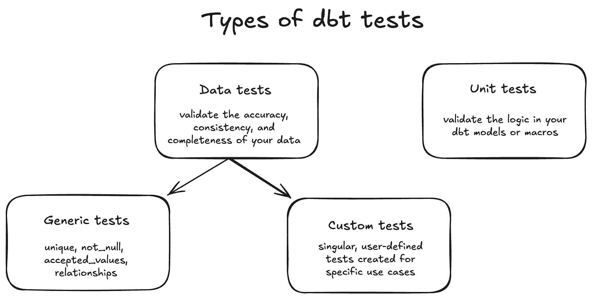

dbt test and the four built-in testsStage 2 left you with a working DAG: sources → staging → intermediate → marts. It compiles. It runs. The numbers in fct_orders look plausible. Now ask yourself:
customer_id is unique in dim_customers?order_id in fct_orders joined to a real customer?status column doesn’t have a typo like "shippeed" rotting a downstream filter?Right now you don’t. You hope. And next time someone changes a staging model, you’ll keep hoping.
This is what dbt test exists to fix. Tests turn assumptions about your data into executable assertions that run alongside the models — same DAG, same dbt build, same green-or-red feedback loop.

dbt has exactly two flavors:
| Type | Where it lives | Shape | When to reach for it |
|---|---|---|---|
| Generic | YAML, alongside the model definition | A predefined check applied to one column | “I want this column to be unique.” |
| Singular | A .sql file in tests/ |
A custom select that returns the bad rows |
“I have a weird business rule that doesn’t fit a generic.” |
Both run when you say dbt test. Both fail the run if any rows come back where rows shouldn’t.
Out of the box, dbt ships with four generic tests. They cover ~80% of what an analytics engineer needs day to day:
| Test | What it asserts | Typical use |
|---|---|---|
unique |
Every value in this column appears exactly once | Primary keys (customer_id, order_id) |
not_null |
No null values in this column | Required fields, foreign keys |
accepted_values |
Every value is from a fixed list | Status / state / enum-style columns |
relationships |
Every value matches a value in another model’s column | Foreign-key integrity (fct_orders.customer_id → dim_customers) |
These four show up in the schema YAML next to the column they apply to:
version: 2
models:
- name: stg__customers
columns:
- name: customer_id
tests:
- unique
- not_null
That’s it. Two lines per assertion. dbt generates the actual SQL behind the scenes and runs it for you.
When you say dbt test --select stg__customers, dbt:
unique on customer_id that’s:sql
select customer_id, count(*)
from "main"."stg__customers"
group by customer_id
having count(*) > 1
That’s the whole mental model. A test passes when its query returns nothing. Singular tests work the same way — you write the “find the bad rows” SQL by hand instead of letting dbt generate it.
Every models/staging/*.sql file deserves a sibling YAML entry. The convention is to put them in a single file per folder:
models/staging/
├── _models.yml ← descriptions + tests for every staging model
├── _sources.yml ← from Stage 2
├── stg__customers.sql
├── stg__orders.sql
└── stg__payments.sql
The leading underscore on _models.yml is a sort order trick — it keeps the YAML at the top of the folder when listed alphabetically. dbt itself doesn’t care about the filename; it scans every .yml under model-paths and merges them.
dbt buildRecall from Stage 2 that dbt build runs models and tests in DAG order. After this stage, dbt build becomes meaningfully different from dbt run: a model with a failing test will block its downstream models from building. That’s the safety guarantee — bad data doesn’t silently propagate to BI.
By the end of Stage 3 you’ll have:
models/staging/_models.yml and models/marts/_models.yml declaring unique / not_null / accepted_values / relationships on every primary and foreign keytests/ catching a business-rule violationorder_status_descriptions.csv) and an analysis (top_customers_by_revenue.sql) — the two adjacent file types from the same dbt chapterPress n to start with the first exercise.